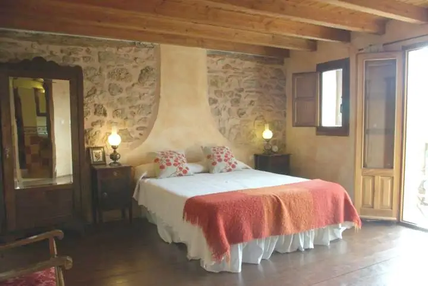
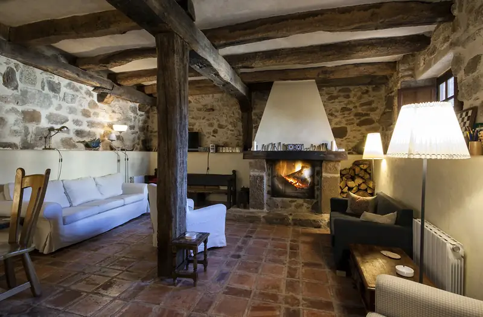
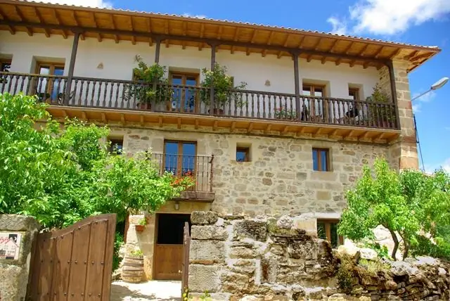
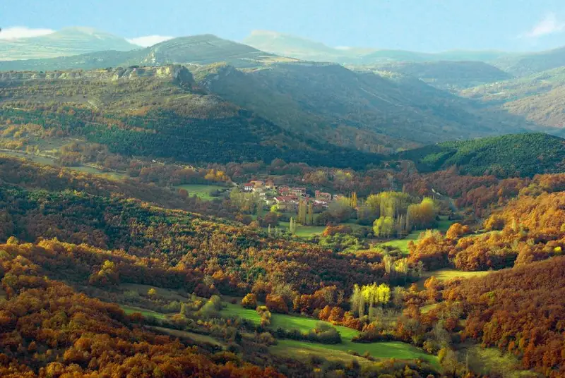
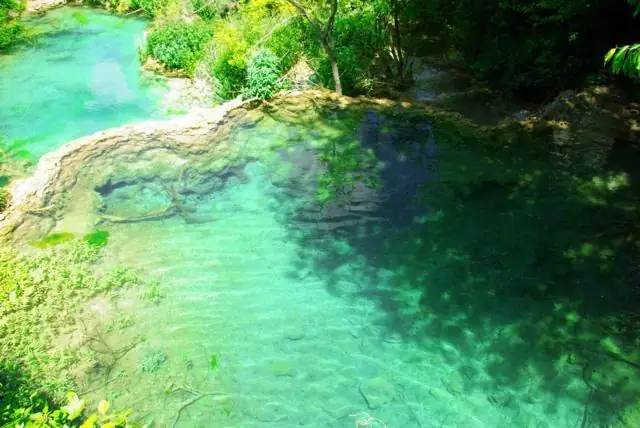
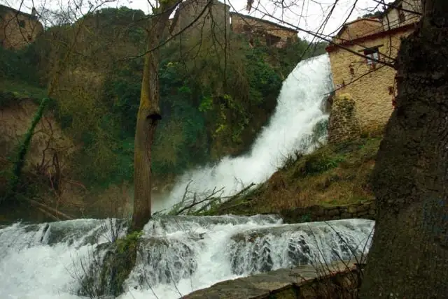
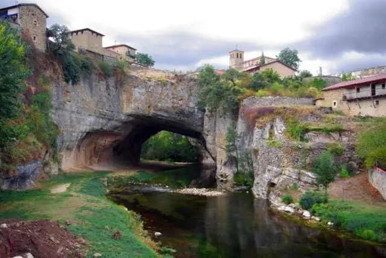
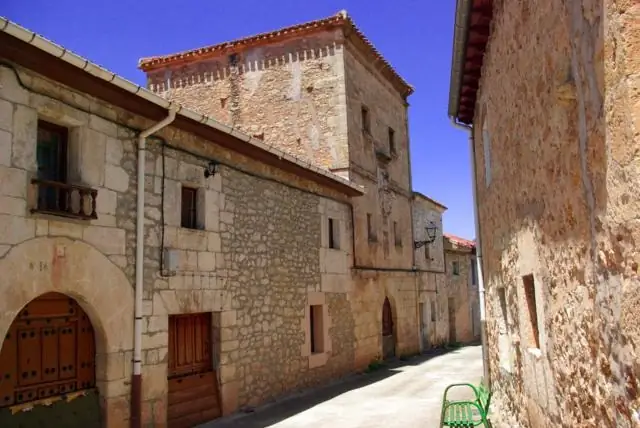
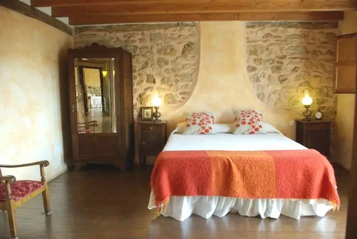
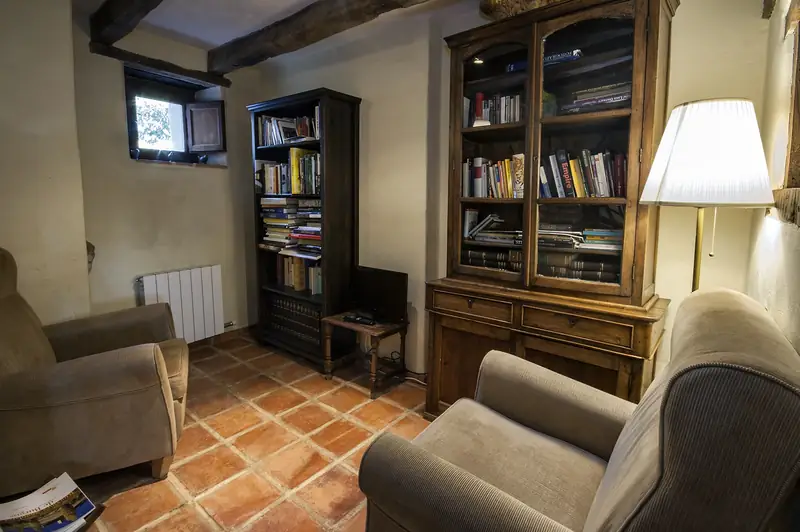
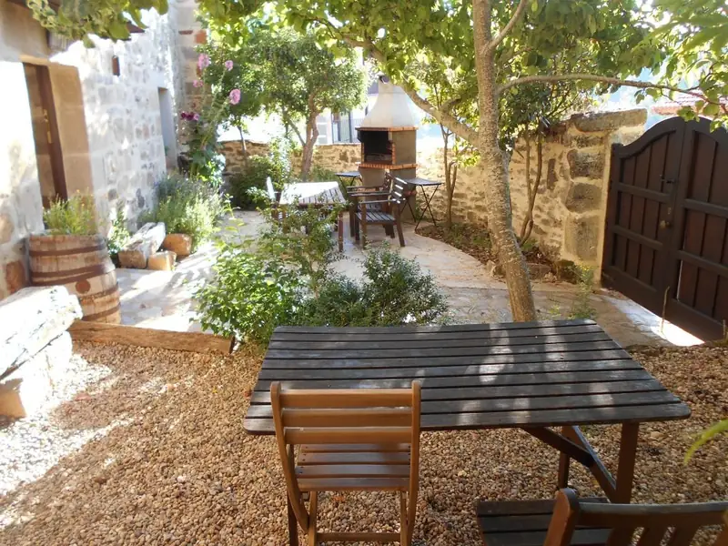
- Orbaneja del Castillo (15 km)
- Cañones del Ebro
- Valdelateja
- San Martín de Elines
- Valle de Zamanzas
- Ojo Guareña
- Hoces del Alto Ebro y Rudrón
Calle Mayor, 4 · 09572 Población de Arreba (Burgos)